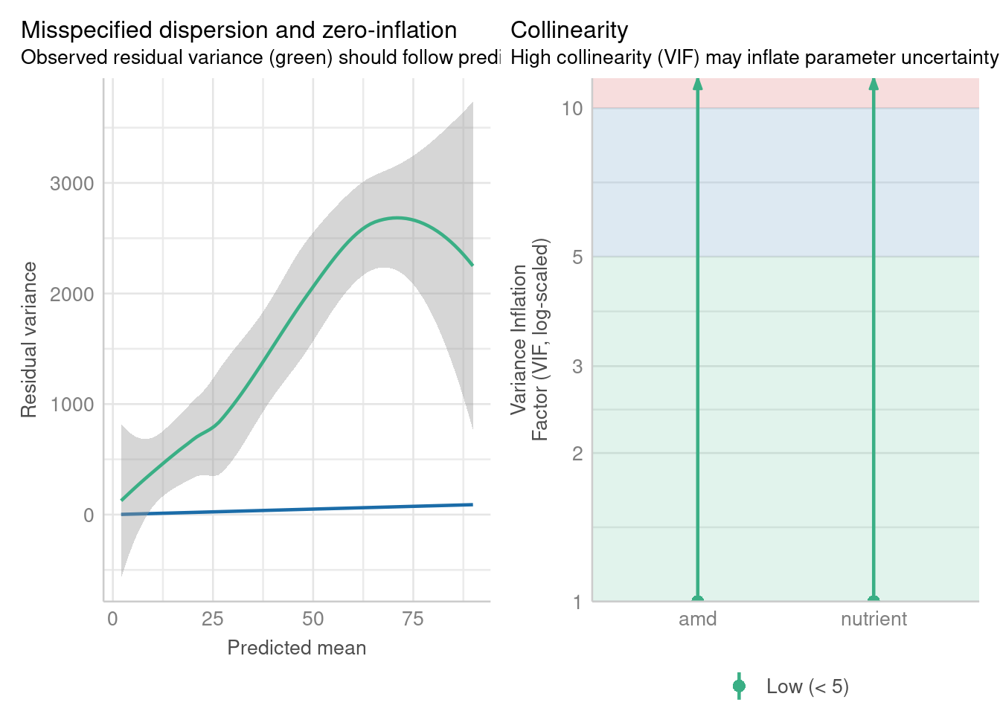

library(performance)
library(glmmTMB)10 Generalised mixed models
This page contains some information, along with a worked example, explaining how to fit and interpret generalised mixed effects models in lme4.
There are no exercises, but we will work through a dataset you’ll recognise from earlier in the course as an example of the code.
Prior knowledge
These bonus materials are intended to follow on from the materials and concepts introduced in our sister course on generalised linear modelling, and will assume knowledge and familiarity with generalised linear models.
10.1 Libraries and functions
Click to expand
We’ll need several packages, including the new glmmTMB, to explore fitting generalised linear mixed models.
10.2 Generalising linear models
One of the assumptions of a linear model is that the response variable is continuous. But in many real experiments, the response variable might be one of the following:
- binary (yes/no or success/fail)
- proportional (number of successes out of all trials)
- fractional (percentage of a quantity)
- count (integers with a lower limit at 0)
or might follow a strongly non-normal distribution, e.g., time or income often follow an exponential distribution.
In these cases, a linear model may not be appropriate, and/or a generalised linear model can provide a better fit. GLMs “extend” the standard linear model by wrapping the linear equation inside a non-linear link function.
10.2.1 Extending linear mixed effects models
Very usefully, the procedure that we apply to generalise a standard linear model - namely, adding a link function - also works to generalise linear mixed effects models.
By including both a link function and one or more random effects, we can combine two extensions to the linear model to create generalised linear mixed effects models (GLMMs).
The assumptions of a GLMM are an amalgamation of the assumptions of a GLM and a linear mixed model:
- Independent observations (after random effects)
- Response variable follows distribution from exponential family (binomial, Poisson, beta, gamma, etc.)
- Correct link function; there is a linear relationship between the linearised model
- Normally distributed random effects
10.3 Revisiting Arabidopsis
To give an illustration of how we fit and assess generalised linear mixed effects models (GLMMs), we’ll look at the internal dataset Arabidopsis, which we investigated earlier in the course in Exercise 7.4.2.
data("Arabidopsis")In this dataset, there are eight variables:
total.fruits, an integer variable measuring the total fruits produced per plantamd, a variable measuring whether the plant underwent simulated herbivory (clipped or unclipped)nutrient, a variable measuring which type of fertiliser/treatment the plant received (1, minimal or 8, added)reg, or region, a variable with three categories (NL Netherlands, SP Spain, SW Sweden)popu, or population, a variable representing groups within the regionsgen, or genotype, a variable with 24 categoriesrack, a “nuisance” or confounding factor, representing which of two greenhouse racks the plant was grown onstatus, another nuisance factor, representing the plant’s germination method (Normal, Petri.Plate or Transplant)
We’re interested in finding out whether the fruit yield can be predicted based on the type of fertiliser and whether the plant underwent simulated herbivory, across different genotypes and populations.
In the previous section of the course on checking assumptions, we fitted a standard linear mixed model to these data. Here, we’ll fit a slightly simplified version:
lme_arabidopsis <- lmer(total.fruits ~ nutrient + amd + (1|popu) + (1|gen),
data = Arabidopsis)boundary (singular) fit: see help('isSingular')summary(lme_arabidopsis)Linear mixed model fit by REML. t-tests use Satterthwaite's method [
lmerModLmerTest]
Formula: total.fruits ~ nutrient + amd + (1 | popu) + (1 | gen)
Data: Arabidopsis
REML criterion at convergence: 6245.2
Scaled residuals:
Min 1Q Median 3Q Max
-1.7839 -0.6391 -0.2043 0.2621 5.3628
Random effects:
Groups Name Variance Std.Dev.
gen (Intercept) 5.498e-13 7.415e-07
popu (Intercept) 1.517e+02 1.232e+01
Residual 1.264e+03 3.555e+01
Number of obs: 625, groups: gen, 24; popu, 9
Fixed effects:
Estimate Std. Error df t value Pr(>|t|)
(Intercept) 8.697 4.981 14.233 1.746 0.102
nutrient 4.578 0.407 614.918 11.248 <2e-16 ***
amdunclipped 4.540 2.847 614.662 1.595 0.111
---
Signif. codes: 0 '***' 0.001 '**' 0.01 '*' 0.05 '.' 0.1 ' ' 1
Correlation of Fixed Effects:
(Intr) nutrnt
nutrient -0.374
amdunclippd -0.299 0.016
optimizer (nloptwrap) convergence code: 0 (OK)
boundary (singular) fit: see help('isSingular')But we found that the diagnostic plots for this model did not look good, in particular the residual vs fitted, location-scale, normal Q-Q and posterior predictive check plots:
check_model(lme_arabidopsis,
check = c("linearity", "homogeneity", "qq", "pp_check"))You may have spotted the reason for this when you completed the exercise in section 7 of this course: total.fruits is not a continuous response variable, but instead a count variable.
We want to improve the way that we’re modelling this variable by including a link function.
10.3.1 The glmer function
Since total.fruits is a count variable, so we should consider a model that uses a discrete distribution, instead of the normal distribution we’ve been assuming so far. We can start with the Poisson distribution, which is the simplest of the commonly-used count distributions.
We do this in lme4 using the glmer function (the g in the function name is for “generalised”). It combines the syntax that you’re already used to from lmer, with the syntax from the standard glm function in base R. In other words, we keep all the same syntax for random effects, and we include the family argument to determine which link function we’re using.
glmm_arabidopsis <- glmer(total.fruits ~ nutrient + amd + (1|popu) + (1|gen),
data = Arabidopsis, family = "poisson")
summary(glmm_arabidopsis)Generalized linear mixed model fit by maximum likelihood (Laplace
Approximation) [glmerMod]
Family: poisson ( log )
Formula: total.fruits ~ nutrient + amd + (1 | popu) + (1 | gen)
Data: Arabidopsis
AIC BIC logLik deviance df.resid
20985.0 21007.2 -10487.5 20975.0 620
Scaled residuals:
Min 1Q Median 3Q Max
-8.571 -3.648 -2.069 1.774 42.407
Random effects:
Groups Name Variance Std.Dev.
gen (Intercept) 0.06356 0.2521
popu (Intercept) 0.25745 0.5074
Number of obs: 625, groups: gen, 24; popu, 9
Fixed effects:
Estimate Std. Error z value Pr(>|z|)
(Intercept) 2.321459 0.178152 13.031 <2e-16 ***
nutrient 0.170799 0.002493 68.508 <2e-16 ***
amdunclipped 0.139879 0.014719 9.503 <2e-16 ***
---
Signif. codes: 0 '***' 0.001 '**' 0.01 '*' 0.05 '.' 0.1 ' ' 1
Correlation of Fixed Effects:
(Intr) nutrnt
nutrient -0.090
amdunclippd -0.045 0.006Some brief points of comparison between this model summary, and the summary for lme_arabidopsis above.
Firstly, you’ll see the GLMM has been fitted using maximum likelihood estimation rather than ReML. Secondly, you’ll also see that there are some p-values provided as standard in the GLMM output; these are called Wald tests, which test whether the coefficient value is significantly different from zero (this is subtly different from testing whether the individual predictor itself is significant).
Let’s have a look at the diagnostic plots, and see if we’ve made any improvements on our standard linear mixed model.
check_model(glmm_arabidopsis, residual_type = "normal",
check = c("pp_check", "outliers", "reqq"))We have one potentially influential point we might want to investigate, which has a Cook’s distance > 0.8. (Note that you can also use the check_outliers function if you find the plot above a little difficult to interpret, or if you want to change the threshold.)
Our random effects do appear to be nicely normally distributed.
The posterior predictive check, however, raises some concerns. The blue simulated values don’t really appear to be following the pattern of the data (green), especially on the left hand side of the plot.
check_model(glmm_arabidopsis, residual_type = "normal",
check = c("vif", "overdispersion"))
check_overdispersion(glmm_arabidopsis)# Overdispersion test
dispersion ratio = 37.821
Pearson's Chi-Squared = 23449.158
p-value = < 0.001Overdispersion detected.Well, we’re fine on collinearity, but overdispersion/zero-inflation seems a huge problem, especially when we use the check_overdispersion function to investigate in more detail. It seems that the Poisson distribution actually isn’t representative of our response variable.
10.3.2 Negative binomial regression
We can, instead of Poisson regression, try fitting a negative binomial regression instead. As with standard GLMs, this requires a slightly different function - glmer.nb rather than glmer.
glmmnb_arabidopsis <- glmer.nb(total.fruits ~ nutrient + amd + (1|popu) + (1|gen),
data = Arabidopsis)
summary(glmmnb_arabidopsis)Generalized linear mixed model fit by maximum likelihood (Laplace
Approximation) [glmerMod]
Family: Negative Binomial(0.536) ( log )
Formula: total.fruits ~ nutrient + amd + (1 | popu) + (1 | gen)
Data: Arabidopsis
AIC BIC logLik deviance df.resid
5051.1 5077.8 -2519.6 5039.1 619
Scaled residuals:
Min 1Q Median 3Q Max
-0.7286 -0.6592 -0.3517 0.2440 12.2435
Random effects:
Groups Name Variance Std.Dev.
gen (Intercept) 0.0461 0.2147
popu (Intercept) 0.2466 0.4966
Number of obs: 625, groups: gen, 24; popu, 9
Fixed effects:
Estimate Std. Error z value Pr(>|z|)
(Intercept) 2.21630 0.20929 10.59 <2e-16 ***
nutrient 0.17569 0.01646 10.68 <2e-16 ***
amdunclipped 0.27879 0.11426 2.44 0.0147 *
---
Signif. codes: 0 '***' 0.001 '**' 0.01 '*' 0.05 '.' 0.1 ' ' 1
Correlation of Fixed Effects:
(Intr) nutrnt
nutrient -0.410
amdunclippd -0.323 0.126If we check the diagnostic plots, we can see a bit of improvement - the posterior predictive check in particular looks much better.
check_model(glmmnb_arabidopsis, residual_type = "normal",
check = c("pp_check", "outliers", "reqq"))check_model(glmmnb_arabidopsis, residual_type = "normal",
check = c("vif", "overdispersion"))check_overdispersion(glmmnb_arabidopsis)# Overdispersion test
dispersion ratio = 0.386
p-value = 0.04Underdispersion detected.It could still be better; there’s evidence now for underdispersion.
The lingering issues might be because of zero-inflation. If we look at the distribution of the data via a histogram, this certainly looks plausible.
ggplot(data = Arabidopsis, aes(x = total.fruits)) +
geom_histogram()`stat_bin()` using `bins = 30`. Pick better value with `binwidth`.What are the next steps in improving this analysis?
Well, we could fit a zero-inflated model to these data. Because zero-inflated models are a bit more complex - you’re actually fitting two different models or distributions simultaneously to the same dataset - lme4 unfortunately doesn’t contain a function that allows us to do this.
If you need to go beyond the standard array of distributions that are offered in glm and glmer, such as fitting a zero-inflated model, you have to explore other R packages. To help guide you, there is a brief description in the next session of some possible options.
10.4 Alternative packages
Though we have focused heavily on lme4 in this course, and for this section on GLMMs, it’s important to flag to you that this is not the only package for fitting generalised mixed effects models (or linear mixed effects models, as it happens).
10.4.1 The glmmTMB package
This package is designed explicitly for generalised mixed effects modelling in R (and somewhat as an extension to lme4, so the syntax isn’t too unfamiliar).
You can find a manual for the glmmTMB package written by the author here that contains more information and code examples.
How might we use the package to fit a zero-inflated Poisson model for the Arabidopsis dataset?
glmmzip_arabidopsis <- glmmTMB(total.fruits ~ nutrient + rack + status + amd + reg +
(1|popu) + (1|gen), data = Arabidopsis,
family = "poisson", ziformula = ~1)
summary(glmmzip_arabidopsis) Family: poisson ( log )
Formula:
total.fruits ~ nutrient + rack + status + amd + reg + (1 | popu) +
(1 | gen)
Zero inflation: ~1
Data: Arabidopsis
AIC BIC logLik deviance df.resid
16065.3 16114.1 -8021.6 16043.3 614
Random effects:
Conditional model:
Groups Name Variance Std.Dev.
popu (Intercept) 0.02115 0.1454
gen (Intercept) 0.02795 0.1672
Number of obs: 625, groups: popu, 9; gen, 24
Conditional model:
Estimate Std. Error z value Pr(>|z|)
(Intercept) 3.412538 0.132959 25.67 < 2e-16 ***
nutrient 0.156741 0.002507 62.52 < 2e-16 ***
rack -0.668821 0.016042 -41.69 < 2e-16 ***
statusPetri.Plate -0.161421 0.022427 -7.20 6.13e-13 ***
statusTransplant -0.184060 0.020137 -9.14 < 2e-16 ***
amdunclipped 0.059388 0.014770 4.02 5.80e-05 ***
regSP 0.448013 0.156767 2.86 0.00427 **
regSW -0.073457 0.168100 -0.44 0.66212
---
Signif. codes: 0 '***' 0.001 '**' 0.01 '*' 0.05 '.' 0.1 ' ' 1
Zero-inflation model:
Estimate Std. Error z value Pr(>|z|)
(Intercept) -1.3808 0.1001 -13.8 <2e-16 ***
---
Signif. codes: 0 '***' 0.001 '**' 0.01 '*' 0.05 '.' 0.1 ' ' 1The new bit of syntax is the ziformula argument. If you set this equal to ~0, you are asking R to estimate the model excluding zero-inflation (which is also the default). So, to model the zero-inflation, you must set this argument equal to ~1.
We could look at all the diagnostic plots (and in a real analysis situation, you would), but let’s focus on the posterior predictive check.
check_model(glmmzip_arabidopsis, residual_type = "normal", check = "pp_check")It’s doing a much, much better job now of estimating those zeroes (top left of the plot). However, it’s suffering from similar problems to our original Poisson model in the range around 1-15.
Perhaps a zero-inflated negative binomial model might do the trick for the Arabidopsis dataset? We can fit that in glmmTMB by updating the family argument.
glmmzinb_arabidopsis <- glmmTMB(total.fruits ~ nutrient + rack + status + amd + reg +
(1|popu) + (1|gen), data = Arabidopsis,
family = "nbinom2", ziformula = ~1)
check_model(glmmzinb_arabidopsis, residual_type = "normal", check = "pp_check")Not perfect - but perhaps better?
10.4.2 Even more packages
Even glmmTMB is not the end of the road. There are others one could use, including packages such as brms and GLMMadaptive, or the glmmPQL function from MASS, and you may see these cropping up in online tutorials or even papers.
For a detailed list of packages, this resource from Bolker et al. is a great starting point.
A note of caution: not all packages will implement exactly the same computational methods “under the hood” as lme4, because fitting and assessing mixed effects models, especially non-linear and generalised ones, is difficult to do and therefore is still an area of active research and discussion in statistics.
So, if you notice that you get different estimates and numbers when fitting models in different packages, don’t panic. What matters more than anything is the conclusion you draw from your data overall, and how confident you are in that conclusion.
For those of you with an interest in the computational side of things, you might find resources such as this blog post to be a useful starting place.
10.5 Summary
Linear mixed effects models can be generalised in the same way that standard linear models are: by wrapping the linear equation inside a non-linear link function. The link function is chosen based on the distribution of the response variable.
Alternatively, you might prefer to think of it the other way around: that GLMs can be extended to cope with non-independence by adding random effects to them. In either case, the result is the same. Both random effects and link functions can be used simultaneously, to cope with the (quite common!) situation where a dataset is both hierarchical and has a non-continuous response variable.
Key points
- By including both a link function to linearise the model, and random effects, we can fit generalised linear mixed effects models in R
- We can do this by using the
glmerorglmer.nbfunctions fromlme4for most of the “common” GLMMs - Other packages such as
glmmTMBare needed for zero-inflated models and other extensions - Evaluating and assessing GLMMs can be done using the same methods as for standard GLMs/linear mixed effects models